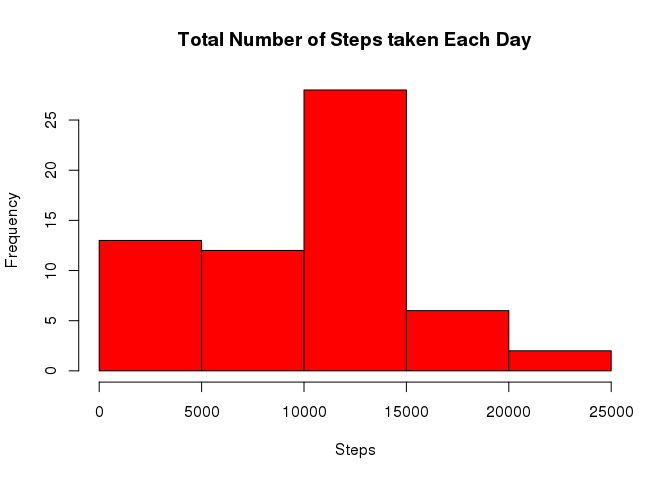

library(knitr)
opts_chunk$set(fig.path="figure/")The data for this assignment can be downloaded from the course web site:
The variables included in this dataset are:
The dataset is stored in a comma-separated-value (CSV) file and there are a total of 17,568 observations in this dataset.
ActivityData <- read.csv(file = "./data/activity.csv", stringsAsFactors = FALSE)
summary(ActivityData)## steps date interval
## Min. : 0.00 Length:17568 Min. : 0.0
## 1st Qu.: 0.00 Class :character 1st Qu.: 588.8
## Median : 0.00 Mode :character Median :1177.5
## Mean : 37.38 Mean :1177.5
## 3rd Qu.: 12.00 3rd Qu.:1766.2
## Max. :806.00 Max. :2355.0
## NA's :2304str(ActivityData)## 'data.frame': 17568 obs. of 3 variables:
## $ steps : int NA NA NA NA NA NA NA NA NA NA ...
## $ date : chr "2012-10-01" "2012-10-01" "2012-10-01" "2012-10-01" ...
## $ interval: int 0 5 10 15 20 25 30 35 40 45 ...The date variable in the Activity Monitoring Data is loaded from the csv file as character (chr), convert to a date (Date) format
ActivityData$date <- as.Date(ActivityData$date, format = "%Y-%m-%d")StepsPerDay <- aggregate(ActivityData$steps, by = list(ActivityData$date), FUN = sum, na.rm = TRUE)
library(data.table)
### Set the column names
setnames(StepsPerDay, c("date", "steps"))hist(StepsPerDay$steps, col = "red", main = "Total Number of Steps taken Each Day", xlab = "Steps")
meanValue <- mean(StepsPerDay$steps)
medianValue <- median(StepsPerDay$steps)The mean of the total number of steps taken per day is 9354.2295082.
The median of the total number of steps taken per day is 10395.
Note that there are a number of days/intervals where there are missing values (coded as NA). The presence of missing days may introduce bias into some calculations or summaries of the data.